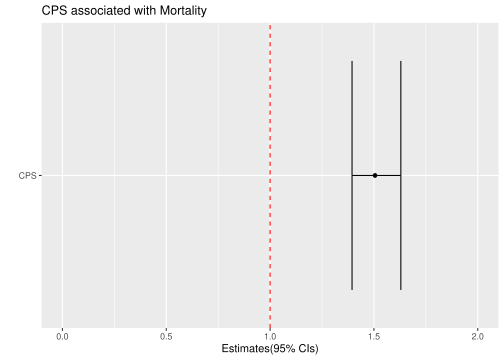

Rows: 1065 Columns: 9
── Column specification ────────────────────────────────────────────────────────
Delimiter: "\t"
chr (6): Sex, Age, Liver_disease, Comorbidities, Etiologies, Mortality
dbl (3): Id, CPS, Charlson_CI
ℹ Use `spec()` to retrieve the full column specification for this data.
ℹ Specify the column types or set `show_col_types = FALSE` to quiet this message.
Child Pugh Score as a predictor of mortality
In the following analysis we would like to check the CPS as a predictor to mortality. We will try to figure out whether a higher CPS is associated with higher odds of mortality. To do that, we will use logistic regression.
In the following bar chart, we can see the proportions for each CPS and mortality. We can see some trend as the yellow stacks of the bars, which represent the no death observations, are on a decrease as the CPS level increase. In other words, we can see a connection between death and high CPS level. In the following analysis we will try to find this connection.
Warning: `as.tibble()` was deprecated in tibble 2.0.0.
ℹ Please use `as_tibble()` instead.
ℹ The signature and semantics have changed, see `?as_tibble`.
logistic_intervals
# A tibble: 2 × 3
term conf_low conf_high
<chr> <dbl> <dbl>
1 (intercept) -5.98 -4.47
2 CPS 0.333 0.488
Warning: Using `size` aesthetic for lines was deprecated in ggplot2 3.4.0.
ℹ Please use `linewidth` instead.
boxplot_logistic_confidence_interval

Now that we have an odds-ratio results, we can understand from the logistic regression that for every one CPS increase, the likelihood for mortality increase by 50%. This is pretty significant information and we can use it to keep high CPS patients under a tighter hospitalization. Furthermore, the results for this analysis are statistically significant since the p-value much lower than 0.05. Also, accoarding to the confidence interval, we can say that 95% confidence that the odds ration will be between 1.39 and 1.62. These results are well fit with the intuition that we had in the 05_analysis_mortality, where we suspected that CPS is connected with mortality. Let us recall:
This analysis assesses that high CPS values have a crutial impact on patients mortality. Of course that we could have some intuition for that before, as we could see in the box plot and the bar chart for this analysis, but according to our data, the odds ratio for it is 1.5. In other words, for every unit increase in CPS, the patients have an increased likelihood for mortality by 50%. This demonstrates how dangerous can cirrhosis be if not treating it as it should.